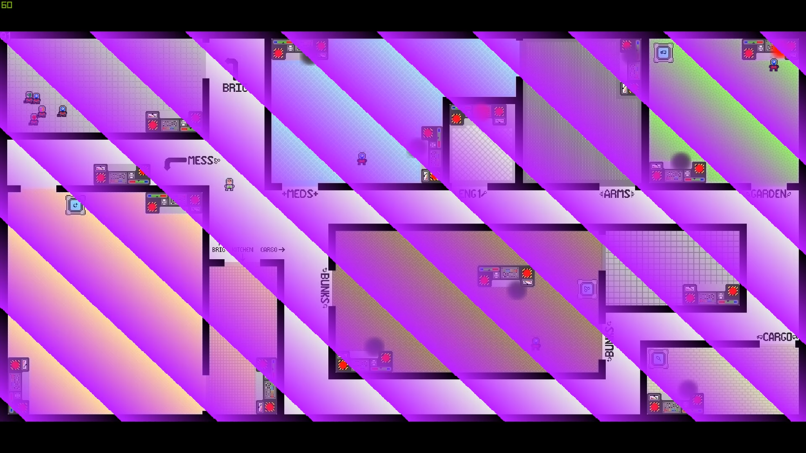

ENG1 Project
About
Deep Space Y is a space station on the outskirts of the galaxy, inhabited by humans and different species of aliens. You are Auber, the constable of the station, and your job is to enforce law and order. The space station has been recently infiltrated by a team of eight hostile operatives whose mission is to sabotage key systems of the station and render it inoperable. When a sabotage attempt is reported somewhere in the station, you are notified, and you need to get there as quickly as possible, arrest the perpetrator, and beam (teleport) them to the brig. Infiltrators have different special abilities that can make them difficult to arrest: one can become invisible for a short period of time, one can cause you to experience temporary hallucinations.
"Auber" is a single-player game, the aim of which is to arrest the infiltrators before they manage to destroy a critical number of key systems of the station. The game is won when all eight infiltrators have been arrested. It is lost when infiltrators have successfully destroyed more than 15 systems of the space station.
Download documentation
Download "Requirements" or view here
Download "Architecture" or view here
Download "Method selection and planning" or view here
Download "Risk assessment and mitigation" or view here
Download an executable JAR of the game
Or
Download a zip file with all deliverables